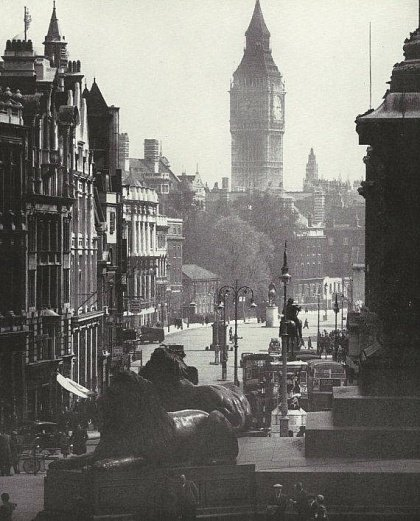

История Big Ben
Башня, на которой сегодня покоится Биг-Бен, была построена в Вестминстерском дворце в конце XIII века. Но в 1834 году пожар уничтожил почти весь комплекс и его пришлось перестраивать, соответственно, башню тоже. Автором проекта стал один из лидеров движения Готического возрождения архитектор Огастес Пьюджин. Его отец эмигрировал в Англию из-за французской революции, ему Пьюджин-младший и обязан страстью к готическому стилю.
Елизавета II (полное имя — Элизабет Александра Мэри Виндзор) — королева Великобритании и Северной Ирландии и королевств Содружества, верховный главнокомандующий вооружёнными силами Великобритании, верховный правитель Церкви Англии, глава Содружества наций с 6 февраля 1952 года до своей смерти 8 сентября 2022 года. На момент смерти являлась монархом в четырнадцати независимых государствах помимо Великобритании: Австралии, Антигуа и Барбуде, Багамских Островах, Белизе, Гренаде, Канаде, Новой Зеландии, Папуа — Новой Гвинее, Сент-Винсенте и Гренадинах, Сент-Китсе и Невисе, Сент-Люсии, Соломоновых Островах, Тувалу, Ямайке; в течение жизни была королевой ещё 17 государств, впоследствии отказавшихся от монархии.